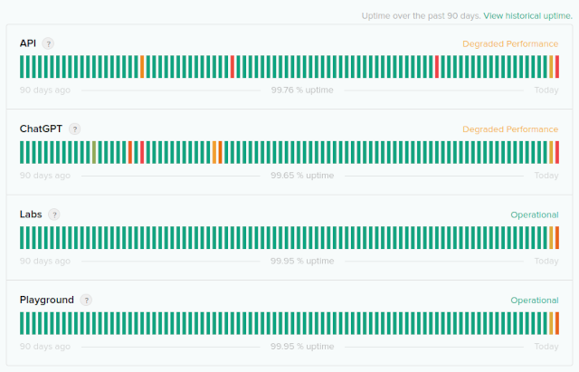
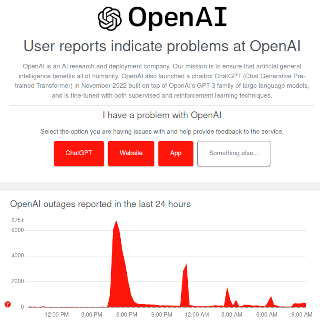

Страница статуса ChatGPT
В веб-интерфейсе сервиса Open AI, который предоставляет доступ к нейросетке ChatGPT, имеется специальная страница, на которой описывается текущее состояние и проблемы, возникающие на сервере. Надо сказать, что проблемы у ChatGPT возникают постоянно: то вообще обслуживающий веб-сервер лежит, то он не справляется с нагрузкой, то накроет DDOS, то отваливается сама нейросетка, то кривые обновления некорректно отправляют/принимают запросы и ответы. В общем, проблем много, и, похоже, ни о какой стабильности говорить не приходится.
Итак, страница статуса сервиса доступна по следующей ссылке:
https://status.openai.com/
Пример содержания данной страницы:
Periodic outages across ChatGPT and API
Update - We are dealing with periodic outages due to an abnormal traffic pattern reflective of a DDoS attack. We are continuing work to mitigate this.
Nov 08, 2023 - 19:49 PST
Update - We are seeing periodic outages across ChatGPT and the API still.
Nov 08, 2023 - 17:23 PST
Update - We are continuing to monitor for any further issues.
Nov 08, 2023 - 12:56 PST
Monitoring - A fix has been implemented and we are monitoring the results.
Nov 08, 2023 - 12:41 PST
Investigating - We are currently investigating this issue.
Nov 08, 2023 - 12:03 PST

Последние инциденты
8 ноября 2023 г.
Серьезные сбои в работе ChatGPT и API
Решено - между 5:42 утра и 7:16 утра по североамериканскому времени мы заметили ошибки, влияющие на все службы. Мы выявили проблему и внедрили решение. Сейчас мы видим нормальные ответы от наших служб.
8 ноября, 07:46 PST
Мониторинг - Исправление было внедрено, и мы постепенно наблюдаем восстановление работы служб. В настоящее время мы следим за ситуацией.
8 ноября, 07:33 PST
Идентифицировано - Мы выявили проблему, приводящую к высокому уровню ошибок в API и ChatGPT, и мы работаем над устранением.
8 ноября, 06:50 PST
Обновление - Мы наблюдаем высокий уровень ошибок в API и ChatGPT и активно расследуем возможные причины.
8 ноября, 06:49 PST
Обновление - Мы продолжаем расследовать эту проблему.
8 ноября, 06:02 PST
Расследование - В настоящее время мы расследуем эту проблему.
8 ноября, 05:54 PST
7 ноября 2023 г.
Частичный сбой в работе ChatGPT и API
Решено - Этот инцидент был разрешен.
7 ноября, 22:21 PST
Мониторинг - Исправление было внедрено, и мы отслеживаем результаты.
7 ноября, 21:59 PST
Идентифицировано - API и ChatGPT снова ухудшились – мы продолжаем расследование.
7 ноября, 21:02 PST
Мониторинг - Исправление было внедрено, и мы видим, что службы возвращаются в нормальное состояние, но мы все еще проводим мониторинг, чтобы убедиться, что мы полностью восстановлены.
7 ноября, 20:47 PST
Обновление - API и ChatGPT продолжают периодически отключаться – мы внедрили пару мер по устранению неполадок, но все еще расследуем проблему.
7 ноября, 20:33 PST
Расследование - В настоящее время мы расследуем эту проблему.
7 ноября, 19:52 PST
...
Если в текущий момент или сутками ранее были какие-то проблемы, а так же на линейках справа видны красные деления, это значит что нормально поработать с ChatGPT не получится.
Статус работы ChatGPT со стороны пользователей
Помимо официальной страницы статуса, можно посмотреть текущее состояние через отчеты пользователей. Сделать это можно на сервисе downdetector.com на странице:
https://downdetector.com/status/openai/
Данная страница показывает проблемы за последние сутки (24 часа). О проблемах сообщают сами пользователи ChatGPT. Отчет выглядит примерно вот так:

Наличие пиков и плато говорит о том, что на сервисе имеются проблемы. В идеале количество проблем должно крутиться около нуля.